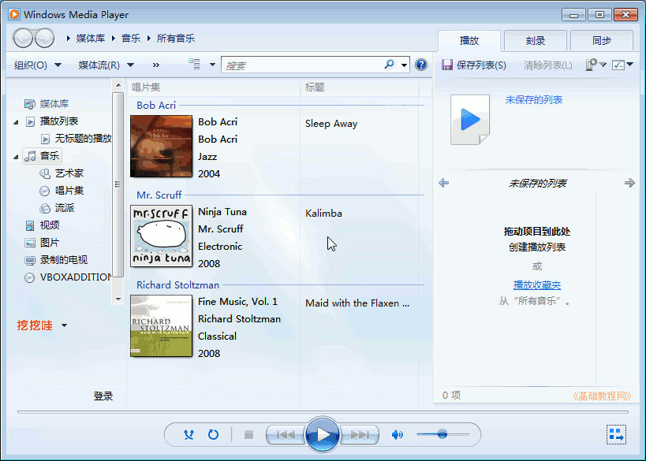

Windows7 基础入门教程
作者：TeliuTe 来源：基础教程网
十三、播放音乐 返回目录 下一课在 Windows 中，一般用WMP来播放音乐和视频；
1、打开音乐
1）打开存放音乐视频的文件夹，找到音乐文件，双击打开它；
2）这时会出现播放器窗口，下边的进度条移动，开始播放音乐；
3）下边一排控制按钮，分别是无序播放、循环播放、停止、上一首、暂停、下一首和音量按钮；
2、播放机库
1）点击任务栏里的播放器按钮，也可以打开WMP音乐播放器
2）这时显示播放机的库视图，左边的窗格中有各种操作，中间显示唱片信息，右边是播放列表；

3）在上边的地址栏空白处点右键，会显示主菜单，依次点“文件－打开”；
4）在出来的打开对话框中，找到音乐文件所在的文件夹，打开音乐；
5）然后也会播放音乐，下边和右边分别显示了音乐播放信息，点右下角的按钮可以切换播放器视图；
本节学习了播放音乐的基础知识，如果你成功地完成了练习，请继续学习下一课内容；
本教程由86团学校TeliuTe制作|著作权所有
基础教程网：>http://teliute.org/
美丽的校园……
转载和引用本站内容，请保留版权信息和本站链接。